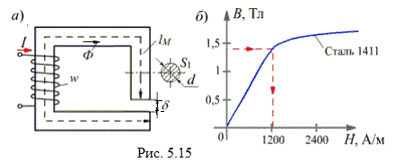
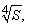

5.3.2.1. Расчёт неразветвленной магнитной цепи. Прямая задача
При расчёте неразветвлённой магнитной цепи различают так называемую прямую задачу (задачу синтеза) и обратную (задачу анализа магнитной цепи).
Прямая задача
Заданы геометрические размеры магнитной цепи (lм, δ, S1, рис. 5,15а) и магнитные свойства отдельных её участков – кривые намагничивания В(Н) (рис. 5.15б), например, все они изготовлены из электротехнической стали 1411. Нужно определить магнитодвижущую силу (МДС) F обмотки, необходимую для создания магнитного потока Ф в зазоре.
Примем S1 ≈ S2 и определим магнитную индукцию на участках цепи:
B1 = Ф / S1; Bδ = Ф / Sδ; B1 = Bδ.
Напряжённость магнитного поля на участке lм найдем по кривой намагничивания; например, для стали 1411 при B1 = 1,4 Тл, H1 ≈ 1200 А/м (рис. 5.15б); для воздушного зазора напряжённость
Hδ ≈ 8·105Bδ.
(5.13)
Согласно закону полного тока МДС обмотки с числом витков w:
F = H1lм + Hδδ = wI.
Выбрав значение тока I, определяют число витков w катушки, или, наоборот, выбрав число витков w катушки, находят значение тока I.


Для приближенных расчётов принимают магнитную индукцию B ≈ 1,2…1,3 Тл и диаметр стержня d ≈ 0,05м, где S – мощность устройства в кВ·А.